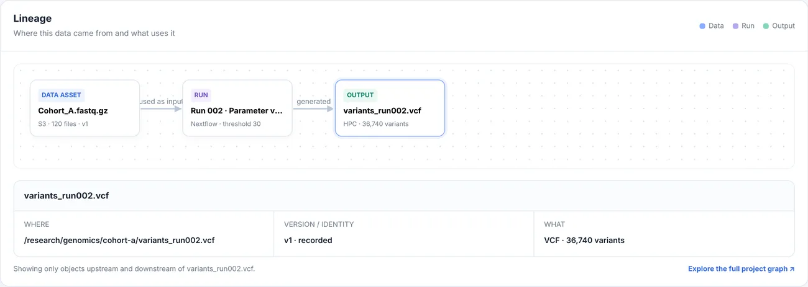
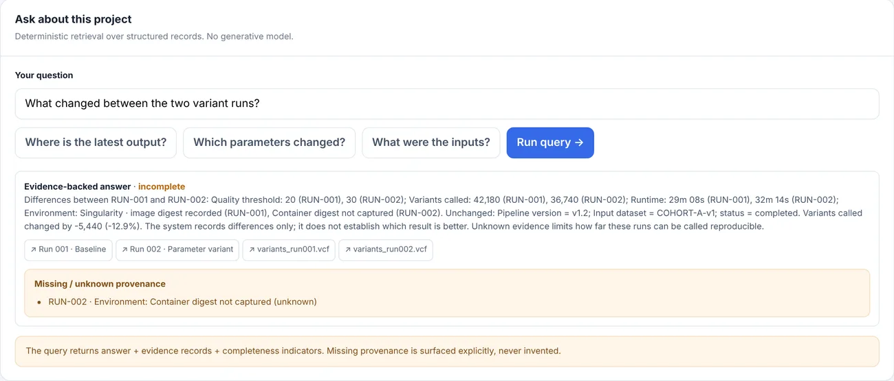

Jubilab, metadata and lineage for scientific data
Which inputs and parameters produced this result?
Jubilab links to your data where it lives and records each processing run as immutable history. Trace any output back to its inputs and forward to what depends on it. Each fact is marked verified, inferred, manual or unknown.
Jubilab is a local-first, self-hostable metadata layer for scientific data. It stores pointers and context, not the data itself.
The problem
A result is a file. What made it is somewhere else: a shell history, a notebook, a message to a colleague. A few months later, or after a handover, the file is still there and the explanation is not.
Comparing two runs then means opening two folders and reading parameters by eye. Jubilab keeps that explanation next to the work, as records you can query.
ScopeJubilab never holds your files. It holds pointers to them, and what is known about how they were made.
What a run record contains
A run record names its inputs, the parameters it was given and the versions involved. It is history: a changed setting is a new run, not an edit of the old one.
| Field | Value |
|---|---|
| id | run-001 |
| name | Variant calling, threshold 20 |
| input | fastq-v1 |
| parameter | quality_threshold = 20 |
| executor | nextflow |
| status | completed |
ProjectsWork is organised in projects. Nothing is shared between projects.
Four kinds of fact
Every fact in a record carries one of four labels, written as a word and a shape, never as colour alone.
- verified
- Confirmed against the thing itself, not just reported.
- inferred
- Worked out from other records. Probably right, not observed directly.
- manual
- Entered by a person rather than read from a system.
- unknown
- Not captured. Shown as unknown, never filled in with a guess.
Why we do not say "reproducible"
A record of inputs and parameters does not guarantee that a result can be rerun. A container image digest may not have been captured; a reference file may have moved. In our demo project the product reports exactly that for one run: "Container digest not captured (unknown)". Jubilab shows the gap instead of hiding it.
Records, not guaranteesThe words on this page are "records" and "history". Jubilab does not certify a result.
Lineage, backward and forward
Pick an output and follow it back to the runs and inputs that produced it. Pick an input and see what depends on it. Figure 2 is a screenshot of the running product on the demo project; the same chain is in Figure 1 as text.

ForwardIn the same demo, the input Cohort_A.fastq.gz is used by two runs, and each generated one output.
Comparing two runs
Put two runs side by side and the fields that differ are marked. Rows with a Δ changed; the rest are shown quieter.
| Changed | Field | run-001 | run-002 |
|---|---|---|---|
| executor | nextflow | nextflow | |
| Δ | quality_threshold | 20 | 30 |
| status | completed | completed | |
| Δ | variants called | 42,180 | 36,740 |
| pipeline version | v1.2 | v1.2 |
Jubilab records differences only. It does not say which result is better.
LegendΔ in the first column: the value changed between the runs.
Works offline, on nodes without internet
On a compute node with no network, the command-line tool writes each record to a spool file. Later, from a machine that can reach the server, jubilab sync sends them. Output below is from a real session on demo data.
$ jubilab register-run --id run-001 --name "Variant calling, threshold 20" --input fastq-v1 -p quality_threshold=20 --status completed --executor nextflow spooled register_run key=a685bbb34a2ad0952f877768ca06baf3 -> jubilab-spool.p_8hakp36js1.jsonl $ jubilab sync synced 3 record(s) to http://127.0.0.1:18190/api/projects/p_8hakp36js1/ingest: applied=3 duplicate=0 error=0
SpoolThe spool is a plain .jsonl file, one record per line.
Runs on your machine
Start it with one command, with Docker Compose or with Python. The server binds to localhost, makes no outbound network calls, and needs no AI model.
$ python -m server serve --data-dir ./data jubilab: listening on http://127.0.0.1:18190 data-dir=./data
Scope"No outbound calls" describes the server. The command-line tool is a separate program.
Answers only from recorded evidence
You can ask a project a question. The answer is assembled from the records and cites them, and where the records do not contain the answer, Jubilab says "cannot determine". No generative model is involved. Figure 3 shows the product's answer to a question about the demo project, including what it could not establish.

Cannot determineAn incomplete answer is a normal result here, not an error.
What Jubilab is not, and does not do yet
- Not a workflow engineIt does not run, schedule or manage pipelines. It records runs.
- Not storageIt does not hold your data files, only pointers and context.
- Not a replacementIt sits beside the tools you already use. It does not replace them.
Not available yet: authentication, connectors to storage services such as S3, and a hosted service. The product is not published, and its licence has not been decided.
Early stageJubilab is early-stage software with no customers yet. We say so here rather than leave you to guess.
Request early access
Early access is by request. Tell us what you work on and we will write back.
Privacy note (placeholder): when this form is live we will use your email only to reply about early access, and will not share it or add trackers to this site.
PreviewThis page is a design preview. The form does nothing.